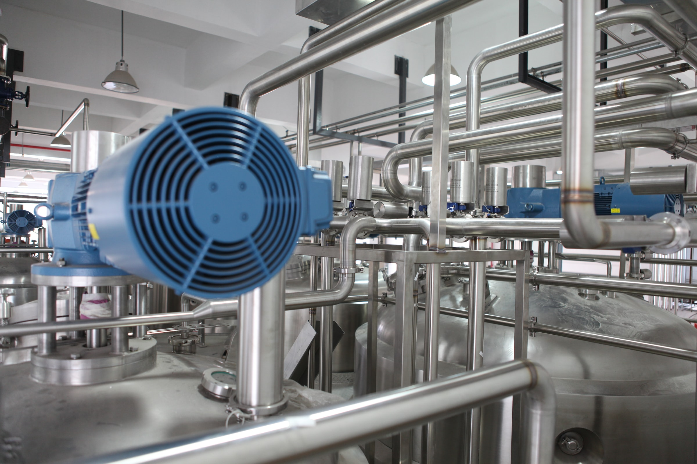

>
기술경영 >
환경경영
환경경영
We protect our environment
효율적인 환경관리시스템으로 친환경기업으로 책임을 다합니다.
환경방침

환경에 대한 책임의식을 바탕으로 경영활동과 건설공사를 관리하며, 대기오염, 소음공해, 건설폐기물 등에 대한 법적 규제를 준수할 뿐 아니라 가능한 한 최저수준으로 실행합니다.
환경에 중대한 영향을 미치는 활동에 대하여 감시, 준수, 평가하는 절차를 사전에 수립하여 운영하며 돌발적인 환경사고를 방지하기 위한 계획을 수립합니다.
환경경영시스템
-
- 01 환경방침
- 건설산업의 주역으로 지구촌 환경문제를 인식하고 이와 관련된 방침을 만들어 환경방침 준수
-
- 02 계획
- 환경 측면, 법규 및 기타요건, 환경목표 및 세부목표, 환경경영 프로그램 등 환경 계획
-
- 03 시행 및 운영
- 체제 및 책임, 인식 및 자격, 의사소통, 문서화 및 문서관리, 운영관리, 비상사태 대비 등 대비책 마련
-
- 04 점검 및 시정조치
- 모니터링과 측정, 부적합사항을 확인하고 시정, 환경경영체제 감사를 통한 시정조치
-
- 05 경영 검토
- 환경 방침에 따라서 프로세스를 움직여 경영에 관한 검토를 통하여 발전사항 운영 체계를 갖춤
-
- 06 지속적 개선
- 방침에 따라 환경 프로세스를 발전시키기 위해 지속적으로 개선사항 발견하고 이에 맞는 조치를 취함
환경 인증서
- ISO 14001
- ISO 14001(International Organization for Standardization 14001)은 기업이나 관공서 등 환경을 오염시킬 수 있는 조직이 표준에서 요구하는 환경경영체제규격을 만족할 경우 제3자 인증기관의 심사를 거쳐 인증을 취득할 수 있으며 당사는 건실한 환경경영시스템을 바탕으로 세계적 관심사인 친환경 건설에 최선을 다하고 있습니다. ※ 당사의 인증서 범위는 ISO 14001입니다.